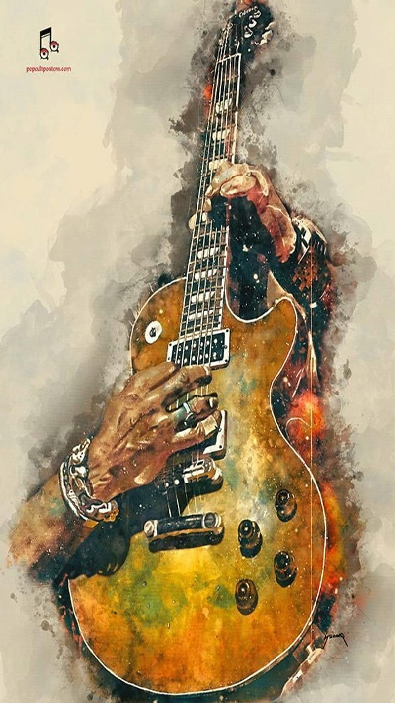
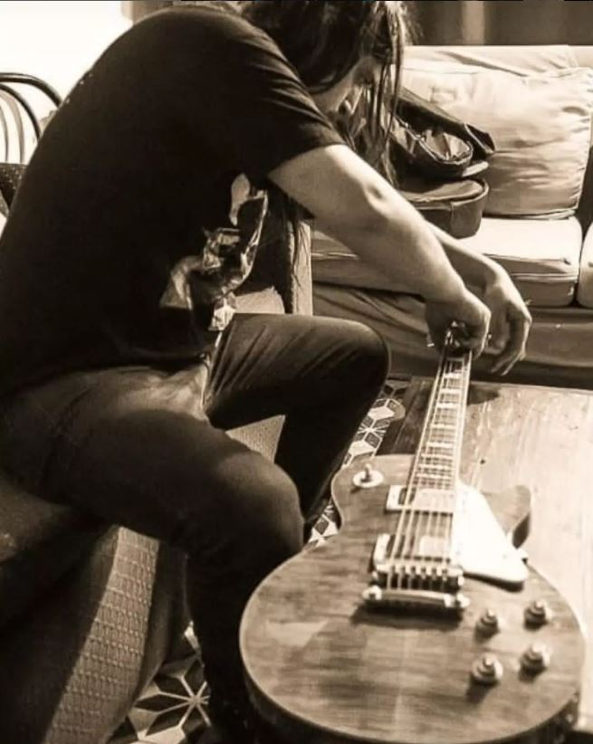
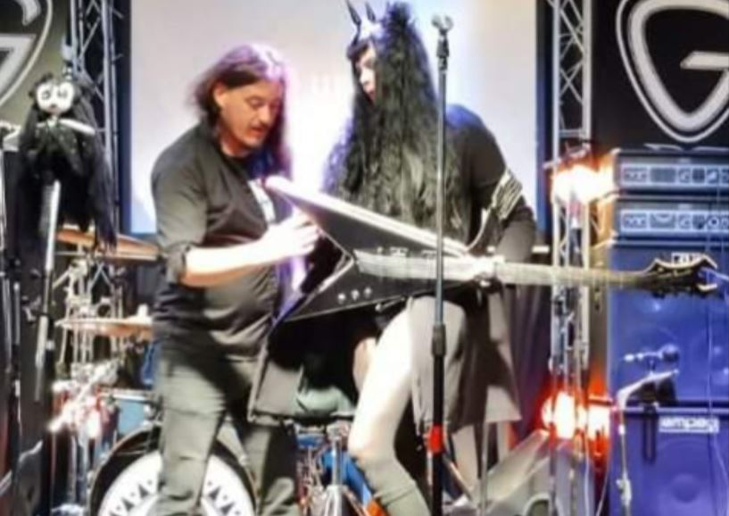
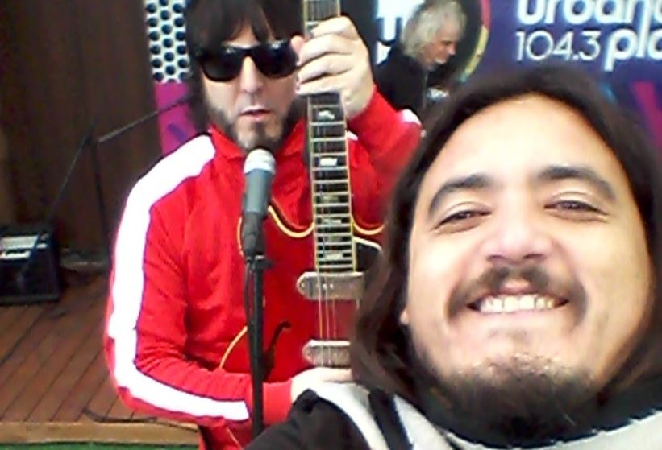
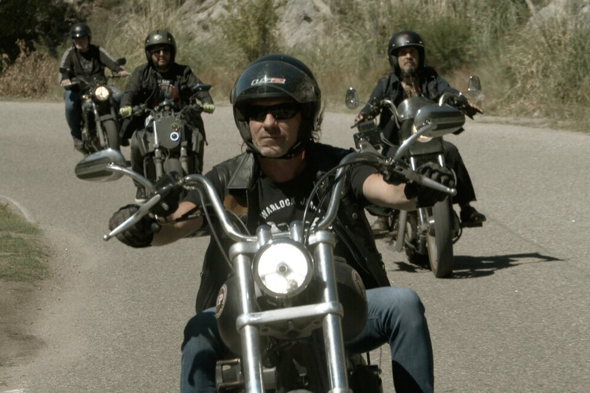

¡Hola! Soy musico desde chico, técnico de esenarios y luthier
con mas de 20 años de experiencia. También diseño y reparo instrumentos.

Diseño de Guitarras
Diseño de Guitarras
Realicé desde cero hermosas violas que usaron grandes músicos.
Soy detallista con la estética y sobre todo con el sonido.

Reparaciones
Reparaciones
Calibrado, cambio de cuerdas y todos los arreglos que necesite tu instrumento.
Esenarios compartidos
Trabajo como asistente de esenario desde pibe. Siempre me gustó la puesta en esena de las bandas.
Fui jefe de esenario en importantísimos templos del rock.
Mi trabajo va desde el asistente personal de un músico hasta la coordinación de todo el equipo de "plomos".
1. Inazulina

¡Que terrible banda INZULINA!
Me encanta trabajar con estos músicos. La tienen muy clara con sus intrumentos, son verdaderos virtuosos.
Pero también saben subirse a un esenario y "romperla todaaaa".
2. Villanos

A Los Villanos seguramente los conocés. La onda que tiene Nico es impresionante.
El sonido que manejan te vuela la peluca.
Agradecido siempre de poder trabajar con ellos.
3. Experiencia Queen
«God Save the Queen»
La música muchas veces es una experiencia y estos músicos te la hacen vivir a pleno.
Estuve de gira con esta banda que maneja un nivel músical excepcional.
Con ellos aprendés o aprendes. Luces, vestuarios, sonido y cuando abre el telón te transportan.
Mi música
Formé parte de varias bandas. Siempre a la vanguardia del rock.
La guitarra bien distorcionada y la batería reventando cabezas.
El final es en donde partí
El final es en donde partí,canción que cumple 24 años de ser editada.Un gran desafío que costó bastante pero no dejó de ser alucinante hacerlo en ningún momento.Fué una especie de ilusión que tenía desde chico hacer algo asi.Fué un placer trabajar por separado con los 18 musicos que participaron."De esta manera quizas no sea la muerte, la que nos logre apagar el dolor".
Mil gracias Tito rengo,emi el bolo y Fede de la pertuza por Bancarme la idea y poner todo a disposición para que salga que de esta manera
No nos íbamos a quedar quietos.
Locomotora cosmica ,Que surja,coverheads,hermanos del delirio,lo peor del mundo, El abel,Mambotango,Claudio tano marciello, La pertuza y AMIGOS.
Aguante La Renga LOS MISMOS DE SIEMPRE! (OFICIAL) #amigos #rock
Desde Uruguay
Un fragmento de una canción de carlos maria Pereyra mi abuelo. Un orgullo total para mi.
Lo peor del mundo
Lo Peor Del Mundo Rock en una actuación muy noble. Aguante!!!
Tendencias / Historias
Entra a las notas a los que hacen ROCK y revisa las historias de los que amamos esta música.
La Renga y su película Totalmente poseídos
Hace dos años tocaron en Córdoba, Salta, San Luis y Río Negro, cuatro findes seguidos moviéndose en moto.
Y armaron su película.
Chizzo Napoli tomó la voz en off y el guión de una producción audiovisual que podría haber sido un documental,
pero derivó en algo muy particular:
una road movie sobre el tramo inicial de esa gira Dispuesta a escribir su propia historia antes de que otros lo hagan, La Renga estrenó la película Totalmente poseídos, donde la banda se narra en el contexto de las primeras presentaciones de Alejado de la red, su disco demorado por la pandemia pero motor de una gira histórica que cerró este enero con cuatro funciones en Racing.

Enviame tu consulta
Me enfoco en ofrecer un servicio personalizado de
calidad y confiabilidad, a través de la buena atención, diseñando
cada propuesta a precios accesibles, logrando superar
las expectativas de cada cliente.